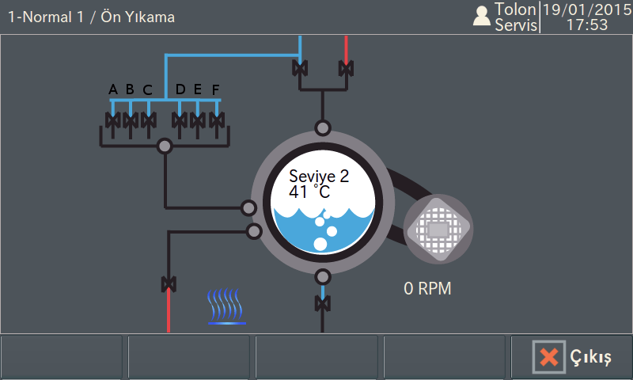
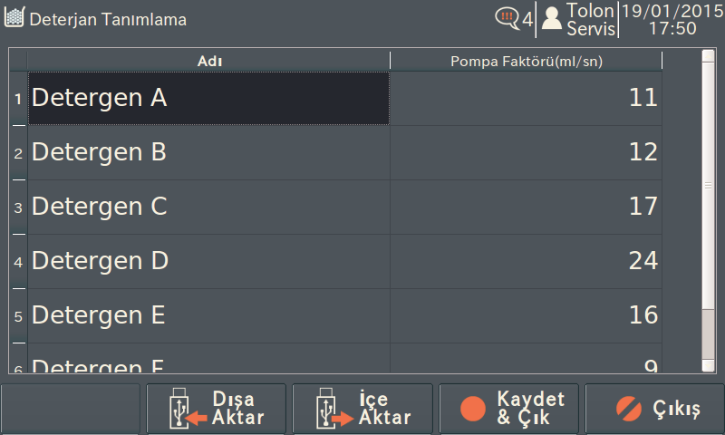

TWE/3
Çamaşır yıkama bilgisayarı
Tek ekranda program özeti
Kapsamlı çalışma parametreleri
Soru-cevap programlama

Detaylı mimik diagramı
Açıklamalı parametre ayarları
Dahili diagnostik sistemi
Alarm istatistikleri
Resimli sorun giderme kılavuzu
Veritabanı yedekleme
CSV formatında program aktarımı
USB girişinden kolay yazılım güncelleme
Çok kullanıcılı erişim kontrolü
Çoklu dil desteği

Yazılım üzerinden harici dozajlama ünitesi kontrölü
Kapsamlı tüketim verileri
TWE Serisi
TWE XL Serisi
TTD Serisi
TTF200